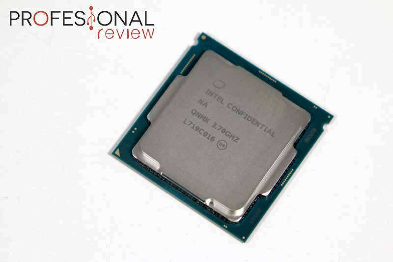

estructura de el hardware
Una de las formas de clasificar el hardware es en dos categorías: por un lado, el hardware principal, que abarca el conjunto de componentes indispensables necesarios para otorgar la funcionalidad mínima a una computadora; y por otro lado, el hardware complementario, que, como su nombre indica, es el utilizado para realizar funciones específicas (más allá de las básicas), no estrictamente necesarias para el funcionamiento de la computadora.
Un medio de entrada de datos, la unidad central de procesamiento, la memoria RAM, un medio de salida de datos y un medio de almacenamiento de datos constituyen el hardware básico.
Los medios de entrada y salida de datos estrictamente indispensables dependen de la aplicación: desde el punto de vista de un usuario común, se debería disponer, al menos, de un teclado y un monitor para entrada y salida de información, respectivamente; pero ello no implica que no pueda haber una computadora (por ejemplo controlando un proceso) en la que no sea necesario teclado y/o monitor; bien puede ingresar información y sacar sus datos procesados, por ejemplo, a través de una placa de adquisición/salida de datos.
Las computadoras son aparatos electrónicos capaces de interpretar y ejecutar instrucciones programadas y almacenadas en su memoria; consisten básicamente en operaciones aritmético-lógicas y de entrada/salida.Se reciben las entradas (datos), se las procesa y almacena (procesamiento), y finalmente se producen las salidas (resultados del procesamiento). Por ende todo sistema informático tiene, al menos, componentes y dispositivos hardware dedicados a alguna de las funciones antedichas; a saber:
Procesamiento: unidad central de procesamiento
Almacenamiento: Memorias
Entrada: Periféricos de entrada (E)
Salida: Periféricos de salida (S)
Entrada/Salida: Periféricos mixtos (E/S)
Desde un punto de vista básico y general, un dispositivo de entrada es el que provee el medio para permitir el ingreso de información, datos y programas (lectura); un dispositivo de salida brinda el medio para registrar la información y datos de salida (escritura); la memoria otorga la capacidad de almacenamiento, temporal o permanente (almacenamiento); y la CPU provee la capacidad de cálculo y procesamiento de la información ingresada (transformación).12
Un periférico mixto es aquel que puede cumplir funciones tanto de entrada como de salida; el ejemplo más típico es el disco rígido (ya que en él se lee y se graba información y datos).
Partes de el hardware:
Unidad central de procesamiento:

La Unidad Central de Procesamiento, conocida por las siglas en inglés CPU, es el componente fundamental de la computadora, encargado de interpretar y ejecutar instrucciones y de procesar datos.13 En computadores modernos, la función de la CPU la realiza uno o más microprocesadores. Se conoce como microprocesador a una CPU que es manufacturada como un único circuito integrado.
Un servidor de red o una máquina de cálculo de alto rendimiento (supercomputación), puede tener varios, incluso miles de microprocesadores trabajando simultáneamente o en paralelo (multiprocesamiento); en este caso, todo ese conjunto conforma la CPU de la máquina.
Las unidades centrales de proceso (CPU) en la forma de un único microprocesador no sólo están presentes en las computadoras personales (PC), sino también en otros tipos de dispositivos que incorporan una cierta capacidad de proceso o "inteligencia electrónica", como pueden ser: controladores de procesos industriales, televisores, automóviles, calculadoras, aviones, teléfonos móviles, electrodomésticos, juguetes y muchos más. Actualmente los diseñadores y fabricantes más populares de microprocesadores de PC son Intel y AMD; y para el mercado de dispositivos móviles y de muy bajo consumo, los principales son Samsung, Qualcomm, Texas Instruments, MediaTek, NVIDIA e Intel.
En las computadoras, el microprocesador se monta en la llamada placa base, sobre un zócalo conocido como zócalo de CPU, que permite las conexiones eléctricas entre los circuitos de la placa y el procesador. Sobre el procesador ajustado a la placa base se fija un disipador térmico de un material con elevada conductividad térmica, que por lo general es de aluminio, y en algunos casos de cobre. Este es indispensable en los microprocesadores que consumen bastante energía, la cual, en gran parte, es emitida en forma de calor: en algunos casos pueden consumir tanta energía como una lámpara incandescente (de 40 a 130 vatios).
En equipos de alto rendimiento, adicionalmente, sobre el disipador se acopla uno o dos ventiladores (raramente más), destinados a forzar la circulación de aire para extraer más rápidamente el calor acumulado por el disipador y originado en el microprocesador. Complementariamente, para evitar daños por efectos térmicos, también se suelen instalar sensores de temperatura del microprocesador y sensores de revoluciones del ventilador, así como sistemas automáticos que controlan la cantidad de revoluciones por unidad de tiempo de estos últimos.
La gran mayoría de los circuitos electrónicos e integrados que componen el hardware del computador van montados en la placa madre.
Tarjerta madre o placa base:
La placa base, también conocida como placa madre o principal o con los anglicismos motherboard o mainboard,14 es un gran circuito impreso sobre el que se suelda el chipset, las ranuras de expansión (slots), los zócalos, conectores, diversos circuitos integrados, etc. Es el soporte fundamental que aloja y comunica a todos los demás componentes: microprocesador, módulos de memoria RAM, tarjetas gráficas, tarjetas de expansión, periféricos de entrada y salida. Para comunicar esos componentes, la placa base posee una serie de buses mediante los cuales se transmiten los datos hacia dentro y fuera del sistema.
La tendencia de integración ha hecho que la placa base se convierta en un elemento que incluye a la mayoría de las funciones básicas (vídeo, audio, red, puertos de varios tipos), funciones que antes se realizaban con tarjetas de expansión. Aunque ello no excluye la capacidad de instalar otras tarjetas adicionales específicas, tales como capturadoras de vídeo, tarjetas de adquisición de datos, etc.
También, la tendencia en los últimos años es eliminar elementos separados en la placa base e integrarlos al microprocesador. En ese sentido actualmente se encuentran sistemas denominados System on a Chip que consiste en un único circuito integrado que integra varios módulos electrónicos en su interior, tales como un procesador, un controlador de memoria, una GPU, Wi-Fi, Bluetooth, etc. La mejora más notable en esto está en la reducción de tamaño frente a igual funcionalidad con módulos electrónicos separados. Las figuras muestran aplicaciones típicas, placa principal de una computadora y la de un teléfono móvil.
Las principales funciones que presenta una placa base son:
Conexión física
Administración, control y distribución de energía eléctrica
Comunicación de datos
Temporización
Sincronismo
Control y monitoreo
Memoria RAM:
La memoria RAM es la memoria principal con la que trabaja un sistema informático, se trata de un conjunto de chips que almacenan información, a la cual es posible acceder de una forma muy rápida, algo importante para que el procesador no tenga que esperar a que le lleguen los datos que necesita para seguir trabajando.
En la RAM se almacena temporalmente la información, datos y programas que la CPU lee, procesa y ejecuta. Este tipo de memoria es volátil, lo que significa que los datos almacenados se pierden al interrumpir su alimentación eléctrica. Es decir, cuando apagamos o reiniciamos nuestro PC.
La memoria RAM de un ordenador se presenta en lo que se conoce como módulos, los cuales albergan varios circuitos integrados de memoria DRAM que, conjuntamente, conforman toda la memoria principal.
La memoria RAM más usada en a actualidad es la DDR4 SDRAM. Los módulos tienen un total de 288 pines DIMM, cada uno de los cuales ofrece una velocidad de datos que va de un mínimo de 1,6 GT/s hasta un objetivo máximo inicial de 3,2 GT/s. Las memorias DDR4 SDRAM tienen un mayor rendimiento y menor consumo que las memorias DDR3 predecesoras.
Las memorias DDR4 se presentan en dos formatos diferentes:
DIMM: usadas en ordenadores de sobremesa.
SO-DIMM: usadas en ordenadores portátiles, minipc y algunas placas bases de formato ITX.
RAM Soldada en la misma placa base: Estas son las más complicadas, ya que cuando se averían, no podremos sustituirla por otra, si no, tendremos que cambiar la placa base al completo. Son muy habituales en equipos portátiles muy finos (ultrabooks) y en algunos mini ordenadores con sistema operativo Android
Disco duro (HDD):
Una unidad de disco duro es un dispositivo de almacenamiento de datos que se basa en un sistema de grabación magnética para almacenar archivos digitales. Un disco duro está formado por uno o más platos unidos por un eje que gira a gran velocidad dentro de una caja metálica sellada. Sobre cada una de las caras de cada plato se sitúa un cabezal de lectura y escritura que se mantiene en suspensión sobre una delgada lámina de aire generada por la rotación de los platos.
El primer disco duro fue inventado por IBM en 1956, desde entonces ha multiplicado su capacidad y se han hecho más compactos. En la actualidad, podemos encontrar modelos de 3,5 pulgadas y 2,5 pulgadas, siendo los primeros usados principalmente en PCs de escritorio y servidores, y los segundos en portátiles. Todos los discos duros se comunican con el PC mediante una interfaz estandarizada, la más común hasta los años 2000 fue IDE en el entorno doméstico y SCSI en servidores y estaciones de trabajo. Desde el 2000 en adelante ha ido masificándose el uso de la interfaz SATA.
Unidad de estado sólido (SSD):
Una unidad de estado sólido es un dispositivo de almacenamiento de datos que utiliza memoria flash no volátil para almacenar datos, en lugar de los platos o discos magnéticos de las unidades de disco duro convencionales. Los SSD no disponen de partes mecánicas en su interior, lo que hace que sean menos sensibles a los golpes, no hacen ruido, poseen un menor tiempo de acceso y de latencia, y consumen menos energía. Su principal inconveniente es que tienen un número limitado de ciclos de escritura, pudiendo producirse la pérdida absoluta de los datos de forma inesperada e irrecuperable.
Las unidades de estado sólido pueden utilizar la interfaz SATA o la interfaz PCI Express para comunicarse con el resto del PC. Los más rápidos son los basados en PCI Express, aunque su coste de fabricación también es mucho más elevado. Los SSD basados en SATA se presentan habitualmente en forma de unidad de 2,5 pulgadas, mientras que los basados en PCI Express, se presentan en forma de tarjeta M.2, aunque no siempre es así. También hay que tener en cuenta si lleva memoria MLC o TLC, para saber su durabilidad.
Los modelos más habituales que nos encontraremos en el mercado son:
SSD SATA: El clásico y más económico del mercado. Nos ofrece tasas de lectura y escritura sobre 500 MB/s. Con este modelos podremos acelerar muchísimo el arranque del sistema operativo y aplicaciones de nuestro ordenador.
SSD M.2 NVMe: Esta ranura nos permite conectar SSD ultra rápidos con una velocidad desde los 2000 MB/s hasta los 2800 MB/s tanto en escritura como lectura. Son los más veloces y los que nos ayudarán a mejorar el rendimiento en aplicaciones de alto rendimiento. Ojo, preparad una refrigeración adicional para bajar sus altas temperaturas.
SSD M.2 SATA: También hay SSD más económicos para la conexión M.2. Se encuentran a la par en precio de los SSD SATA y su rendimiento es prácticamente igual. Vienen muy bien para bolsillos ajustados o MiniPC estilo Intel NUC.
PCI Express: Antes del lanzamiento de los dispositivos NVME eran bastante comunes. En fechas actuales son raros de ver, es más fácil ver alguna unidad Intel Optane de gama alta con esta interfaz.
MSATA: Se incorporaba en algunas placas bases de gama media / alta hace unos años pero actualmente solo lo podremos encontrar en algun portátil de línea empresarial. Su rendimiento es muy parecido a los SSD SATA.
Fuente de poder:
Seguimos viendo más partes del hardware. Una de ella es la fuente de alimentación, fuente de poder o power supply unit (PSU) es el dispositivo que se encarga de convertir la corriente alterna (CA), en una o varias corrientes continuas (CC), que alimentan los distintos circuitos del aparato electrónico al que se conecta. Las fuentes de alimentación se usan en todo tipo de dispositivos electrónicos, ya que generalmente todos ellos necesitan corriente continua para funcionar, y las redes eléctricas de nuestras casas solo ofrecen corriente alterna.
Este es uno de los componentes más importantes de nuestro PC, ya que es el encargado de alimentar el resto de componentes, una fuente de alimentación de baja calidad nos va a dar muchos problemas casi seguro, por ello es muy recomendable optar por un modelo de buena calidad.
Algunos de los puntos más importantes a la hora de elegir una fuente de alimentación son:
Certificación 80 PLUS: Es una forma sencilla de la calidad de nuestra fuente de alimentación. Normalmente encontraremos certificaciones bronce, plata, oro, platino y titanio. Aunque a veces nos pueden engañar (en certificación bronce y plata sobretodo) y debemos tener en cuenta otros factores.
Componentes internos: quién ha fabricado el núcleo, si lleva condensadores japoneses, el ventilador, el número de Watios soportado o los conversores DC-DC son puntos claves.
Cableado modular o fijo: Siempre recomendamos que adquiráis fuentes modulares, pero si tu presupuesto es ajustado un cableado fijo no deberá ser un problema para una buena organización.
Potencia necesaria para tu PC: Para ello debéis calcular cuantos Watios puede consumir tu torre. En nuestro foro tenéis un post que habla sobre ello con mayor detalle.
Tarjeta de sonido:
La tarjeta de sonido o placa de sonido es una tarjeta de expansión que se instala en un ordenador u otro dispositivo electrónico y permite la salida de audio controlada por un programa informático llamado controlador o driver. Algunos equipos tienen la tarjeta ya integrada a la placa base, mientras que otros, requieren tarjetas de expansión. También hay equipos que por su uso no requieren de dicha función. La parte más importante de la tarjeta de sonido es el DAC, el encargado de convertir los ficheros digitales almacenados en la memoria del ordenador, en una señal analógica que llegará a los altavoces para su reproducción.
También hemos visto mucha mejora en estos últimos 4 años en el software de los principales fabricantes de placas bases. Ayudando a la compatibilidad con auriculares profesionales (esto se debe a las características del hardware de la tarjeta) o incluso mejorando en el 5.1 / 7.1 en cascos o altavoces mientras jugamos.
Tarjeta gráfica:
Una tarjeta gráfica o tarjeta de vídeo es una tarjeta de expansión que se encarga de procesar los datos provenientes de la CPU y transformarlos en información representable en el dispositivo de salida, por ejemplo: monitor, televisor o proyector. Al igual que ocurre con la tarjeta de sonido, la tarjeta gráfica también puede estar integrada en la placa base o incluso en el procesador.
Una tarjeta gráfica está formada por varios elementos que trabajan de forma conjunta para hacer su trabajo:
Tarjeta gráfica o GPU: la GPU o unidad de procesamiento gráfico, es un componente especializado en el procesamiento de gráficos. Su razón de ser es aligerar la carga de trabajo del procesador central. Está optimizada para el cálculo de operaciones en coma flotante, predominantes en las funciones 3D. La GPU constituye la parte más importante de la tarjeta gráfica, y es el principal determinante del rendimiento.
VRAM: se trata de chips de memoria que almacenan y transportan información entre sí, no son determinantes en el rendimiento máximo de la tarjeta gráfica, pero deben ser lo suficientemente rápidos para contener todos los datos que precisa la tarjeta para funcionar. Cuando compramos una GPU, por ejemplo, una Nvidia GTX o una AMD RX ya vienen ensambladas y nunca podremos ampliarla, esto significa que nos tocará adquirir una nueva tarjeta gráfica. Un caso diferente es de la tarjeta gráfica integrada que incorpora algunos procesador (Intel HD o las APU de AMD), que adquieren su memoria del uso compartido de la RAM.
RAMDAC: se encarga de transformar las señales digitales producidas en la tarjeta gráfica en una señal analógica que sea interpretable por el monitor. Dada la creciente popularidad de los monitores de señal digital, el RAMDAC se está quedando obsoleto, puesto que no es necesaria la conversión.
A su vez, la GPU está formada por varios elementos:
Shaders: es el elemento más notable de potencia de una GPU, estos sombreadores unificados reciben el nombre de CUDA Cores en el caso de NVIDIA y Stream Processors en el caso de AMD.
ROPs: se encargan de representar los datos procesados por la GPU en la pantalla, además de los filtros como el de suavizado o antialiasing.
TMUs: son las unidades encargadas de aplicar las texturas a los píxeles generados.
¿Puedo conectar dos tarjetas gráficas para ganar el doble de potencia? Sí, pero el escalado no es 100%. Dependiendo del juego podremos tener una mejora de un 20% más o un 50% gracias a las tecnología AMD Crossfire o AMD SLI. Hay que dejar claro que nunca podremos escalar al máximo, por lo que es mejor comprar la mejor tarjeta gráfica para gaming para ganar la máxima potencia. Si hablamos de minado o computación distribuida si podremos usarlo sin necesidad de ninguna tecnología.


.jpg)